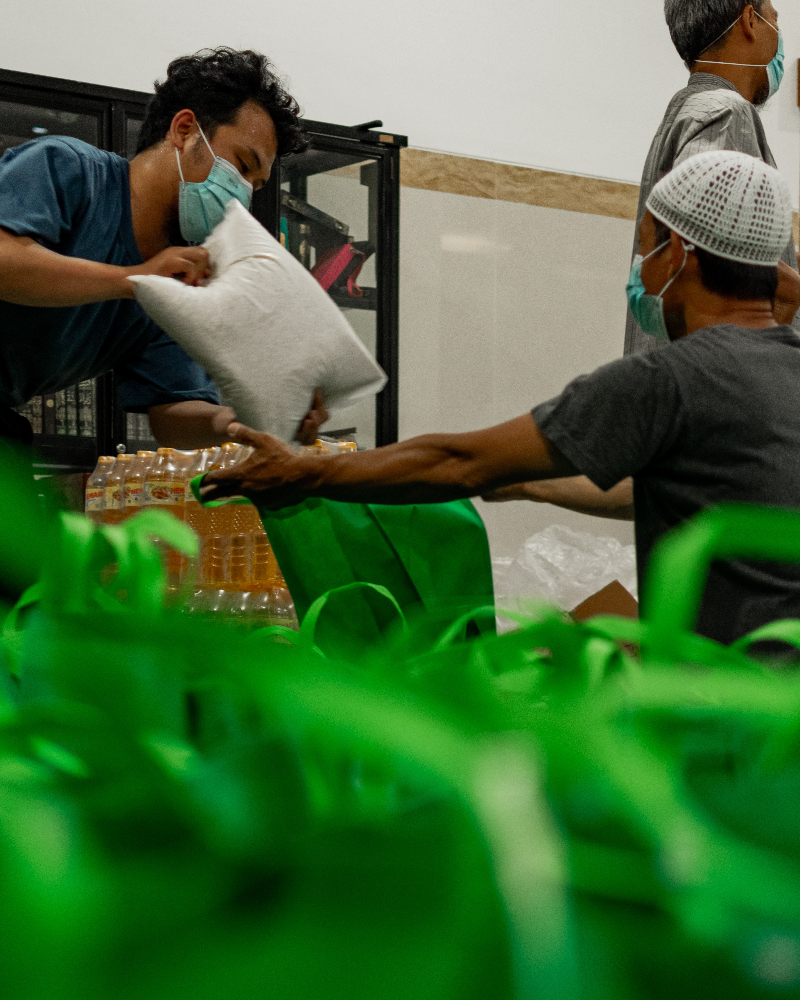
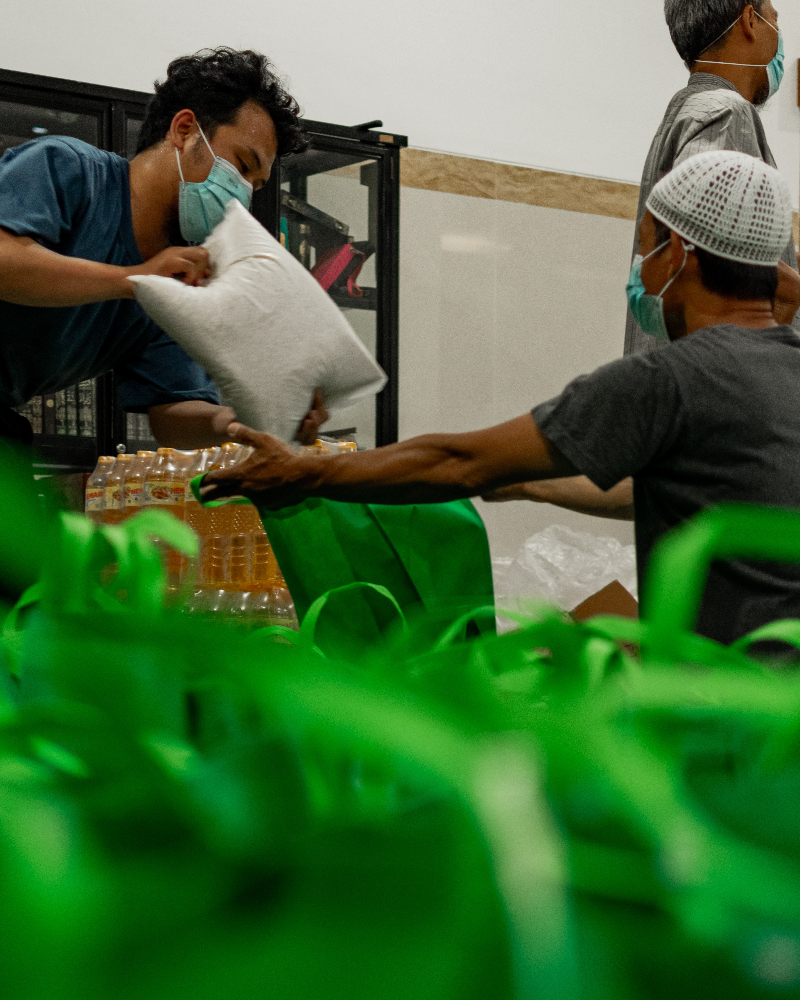

Afghanistan
For decades, Afghanistan has borne the brunt of global conflicts, leaving its beautiful landscapes marred and its innocent people suffering. Millions of Afghans, including countless children, have never known peace. Their resilience is awe-inspiring, but they need our help to rebuild their nation, secure education for their children, and create a promising future.
Learn More
Central African Republic
The Central African Republic, with its rich culture and vast potential, has been trapped in cycles of violence and political instability. Countless families have been displaced, children orphaned, and dreams shattered. By extending our hand, we can provide hope and catalyze change in this resilient nation.
Learn More
Democratic Republic of the Congo
Amidst the vast rainforests and mighty rivers of the DRC lies a tale of endurance and hope. For years, this land of immense natural wealth has witnessed conflicts that have left communities torn and families devastated. Yet, the spirit of the Congolese remains as vibrant as ever. As we reach out to support them, we're not just aiding in rebuilding infrastructures; we're restoring dreams, rekindling hopes, and reviving the heart of a nation that has faced so much yet stands tall with undying resilience.
Learn More
Iraq
Once the cradle of civilization, Iraq has faced years of upheaval, war, and internal strife. Its people have showcased indomitable spirit in the face of adversity. Let's come together to support Iraqis in their quest for stability, peace, and prosperity.
Learn More
Libya
Libya, with its rich history and strategic significance, finds itself in the throes of ongoing conflict. Yet, hope remains, and with our collective efforts, Libya can reclaim its position as a beacon of culture, prosperity, and peace in North Africa.
Learn More
Palestine
Nestled in the heart of the Middle East, Palestine stands as a testament to the indomitable spirit of its people. Through decades of challenges, displacements, and geopolitical complexities, the Palestinian spirit remains unwavering. Their rich tapestry of history, culture, and hope shines bright, even in the face of adversity. Supporting Palestine means preserving the dreams of countless children, fostering peace, and ensuring that the melody of their heritage continues for generations to come.
Learn More
Somalia
Despite its challenges, Somalia's spirit remains unbroken. However, recurring droughts, political unrest, and other challenges have taken their toll. Together, we can play a part in ensuring that the people of Somalia thrive and that the nation regains its vibrancy.
Learn More
Ukraine
Ukraine, rich in culture and spirit, has faced recent challenges that have tested its resilience. Families have been separated, and communities uprooted. By standing with Ukraine, we can help its people rebuild and ensure that its unique identity thrives.
Learn More
Democratic Republic of the Congo
Yemen, the land of ancient history and unparalleled beauty, has been overshadowed by a devastating conflict. Millions are on the brink of famine, lacking basic necessities. It's our moral duty to stand with the Yemeni people and help them reclaim their right to a peaceful existence.
Learn More 
